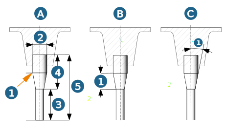

Define tool geometry
General
Define name, comment (optional) and measurement system.
For a tool series
Name pattern part
Comment pattern part
Tool series: The name of the tool series is displayed.
Manufacturer: The manufacturer is displayed for a tool series. For a single tool, select the manufacturer from the list of available manufacturers.
Ordering code
Geometry
Define the Diameter and Length of the tool.
Use the ISO fit geometry parameter and select a tool that is suitable for the hole tolerance using standardized tolerance values (Upper allowance / Lower allowance).
Shank
Shank mode: Select either the Free or Parametric option to define the shank. Select the None option if no shank is necessary.
 |
In the Free shank mode, use the geometry editor to define the shape of the tool shank. To do this, open the geometry editor. |
|
|
Delete freely defined geometry. |

In the Parametric shank mode, specify the shank diameter and the method of chamfer definition. With the Absolute (A) chamfer definition, specify a point for the chamfer end position (1) as an absolute value. With the Length (B) chamfer definition, specify the chamfer length (1) and with the Angle (C) chamfer definition, specify the chamfer angle (1).
(2) Shank diameter, (3) Tip length, (4) Shank length, (5) Tool length.
|  |
Tip
Define the parameters for the tip of the tool.
To define a tapered tool, enable the Conical tip option and define the Cone angle.
Allow plunge: Only available for Chamfered cutter. Enabled by default. The tool is allowed to plunge into the model without a collision message being generated.
|
|
Free tip geometry: Open the geometry editor and define the tip geometry. In the Cutting area column, enable line segments that define the cutting part of the tool tip. |
Caution
The Free tip geometry is not checked against collisions.
The length of the tool tip is calculated automatically if the following conditions are fulfilled:
-
The Conical tip parameter is enabled,
-
the shank mode is set to Parametric,
-
length is defined as the chamfer definition and
-
the Chamfer length is 0.
The following applies to the shank definition: Length of the chamfer >= 0 and length of the chamfer <= shank length.